Moments worth keeping.
Hackathons, fellowships, treks, cricket, and the people in between. Hover a photo for the story. Tap on mobile.
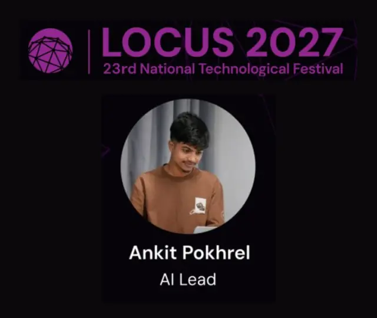
AI Lead, LOST
Leading the AI sub-team of the LOCUS Open Source Team for LOCUS 2027, the 23rd National Technological Festival. Frontend, backend and AI building together; I started at LOCUS as a first-year fellow.
Software Fellowship
Joined LOCUS Software Fellowship as a first-year fellow. Now I'm back as an instructor, teaching fellows Python, GitHub, and machine learning. Same event, other side of the desk.
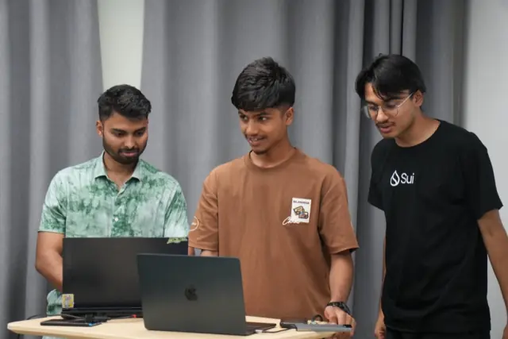
Cybersecurity & Linux Workshop
Three days of networking, learning, and handling chaos, organised by our IT Club team. Bunked a few classes to keep the timeline alive. Absolutely worth it.
CIT: Children in Technology
LOCUS and WorldLink teaming up to teach government school students about technology, cybersecurity, the internet, and ML. I went as a tutor; the kids' perspective taught me right back. The most feel-good thing I've done.
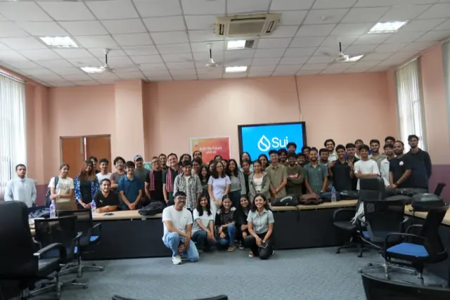
Suiii
Blockchain hackathon with iBriz.ai and IT Club. Got hands-on with the SUI coin and how chains actually work, so yes, the title is fully intended.
Where it started
My first ever hackathon. We built Kanun Sathi, a RAG-based legal assistant fed with Nepali government documents: ask in plain words, get grounded answers. The project outlived the event.
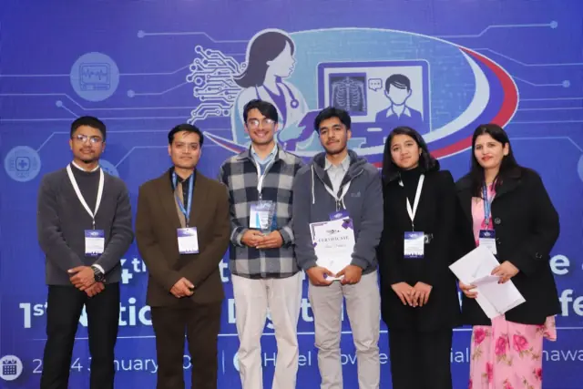
Telemedicine Hackathon
The eye-opener. Health professionals showed us what healthcare in Nepal really struggles with, and we built a digital drug registration system to replace a still-paper-based process. Sounds simple, wasn't. Finished 1st runner-up.
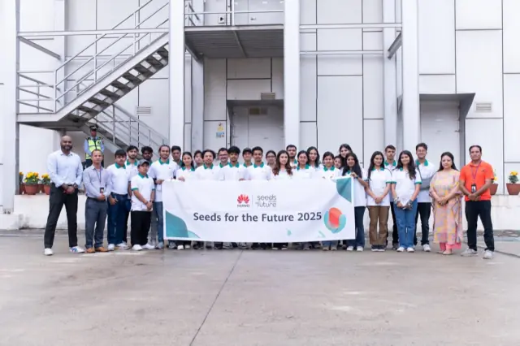
Seeds for the Future
Selected among Nepal's top 30 students for Huawei's CSR program. 5G, AI, and cloud computing in the sessions; NCELL's data center and UNESCO's Nepal office in between, discussing how tech can preserve languages and cultural heritage.
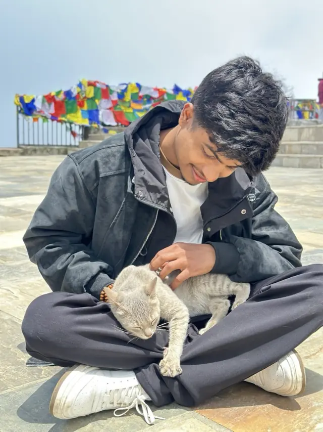
Sailung
Just me.
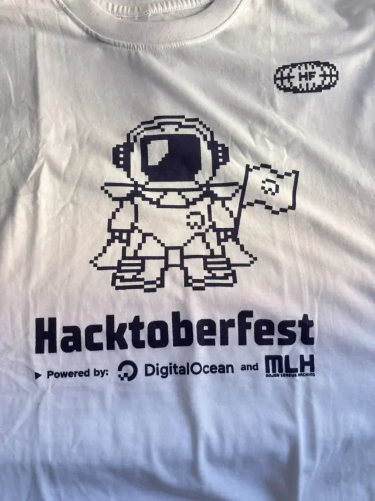
Hacktoberfest
Made the global top 10,000 contributors and earned the t-shirt. Fully worth the merge conflicts.
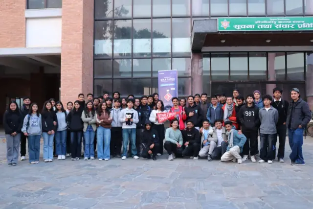
GitHub workshop
IT Club and PDSC collab, supported by GitHub: teaching students the commands they'll use daily and the ones they'll keep googling forever.
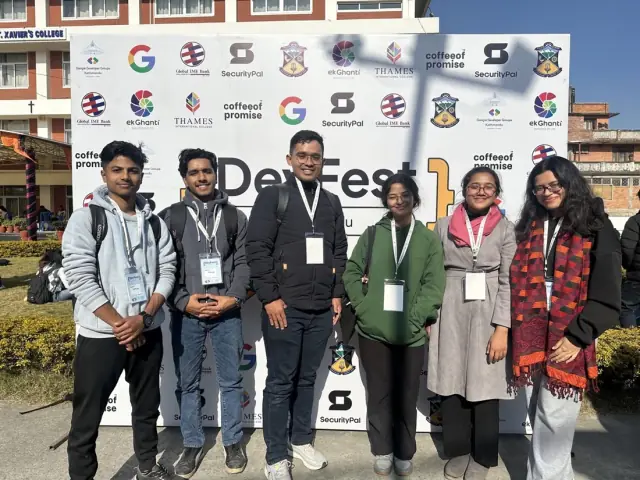
DevFest
My very first tech meetup. Open source, RAG, AI in banking, and the realisation that the local tech scene is much bigger than I thought.
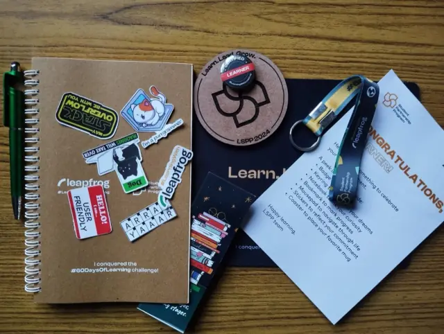
60 Days of Learning
Learn something, post about it, every day for 60 days, no broken streaks. Won it twice in two years. Consistency is a skill; the prize is a bonus.
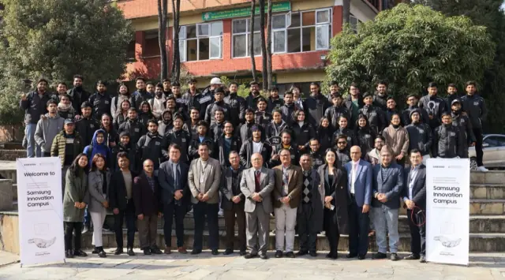
Samsung Innovation College
Samsung's CSR program teaching Nepali students Python, run in collaboration with Pulchowk Campus. Got to learn the Samsung syllabus first-hand. Certified, and genuinely fun.
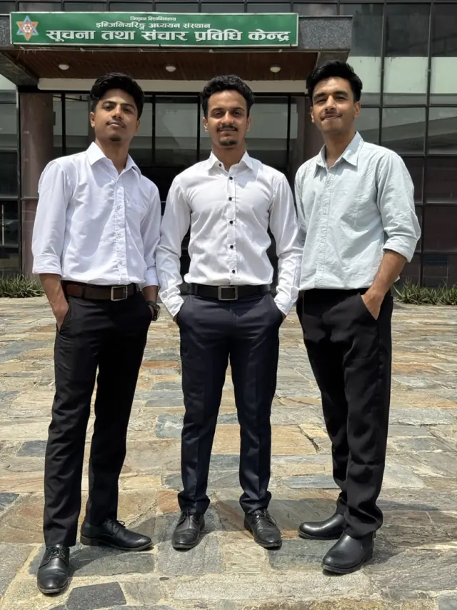
Minor project days
The minor project group behind the NDN anomaly detection research. Started as a syllabus requirement, became the research on my projects page.
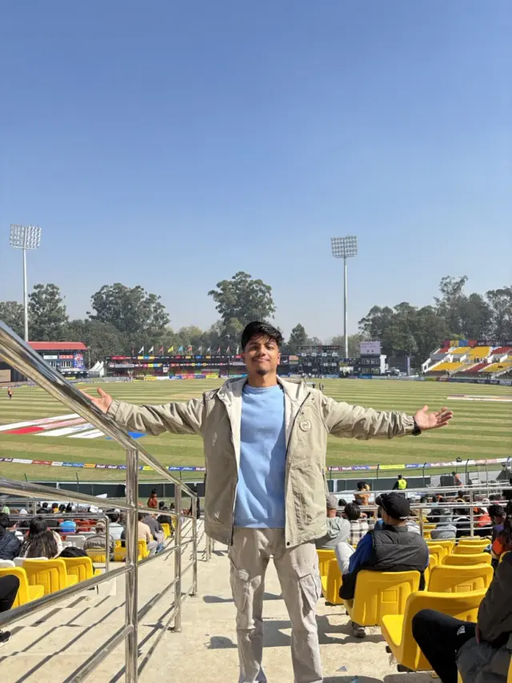
NPL all day
Nepal Premier League at the stadium. The noise when Bhurtel hits a six is unreal.
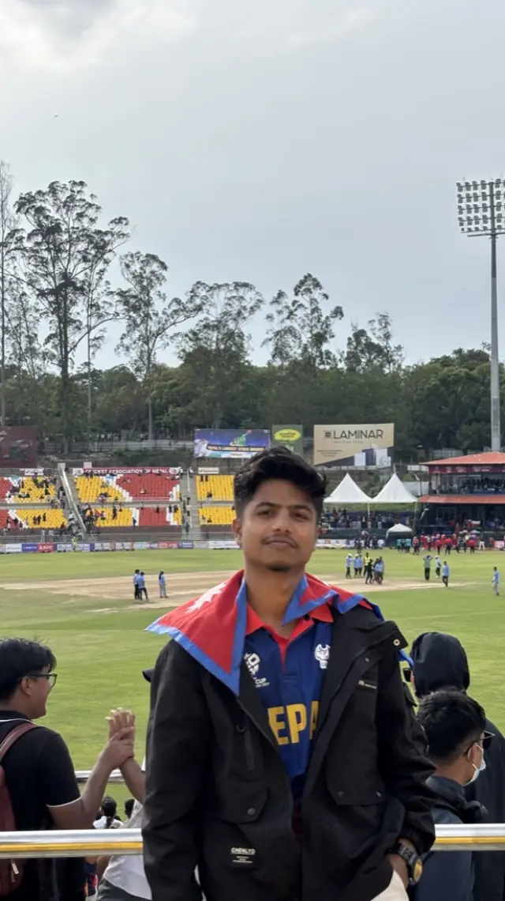
Love for the game
Some things you don't outgrow. The game is the game.
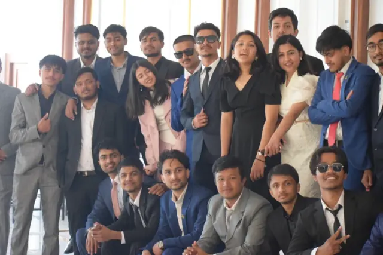
Farewell
Life outside the terminal. It compiles too.
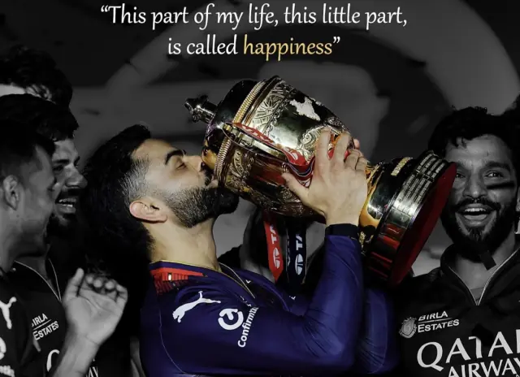
Happiness
No context needed. Just a good day.
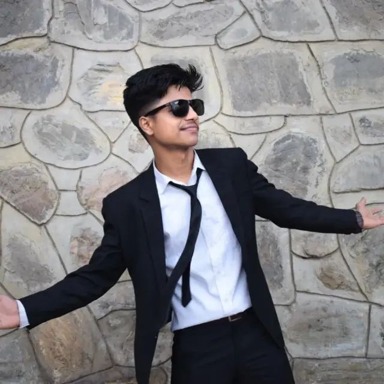
SRK
Hitting this pose is mandatory